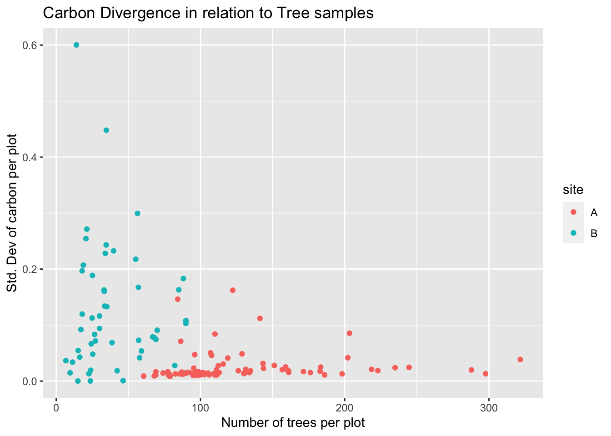

#Load the shared Mangrove Data from Silvestrummangrove_df_a <-read_csv("/Users/javipatron/Documents/MEDS/Personal/projects/mangrove-analysis/data/clean_monitoring_data_javier.csv") |>clean_names() #Clean names will make the column names as lower case
Rows: 10826 Columns: 20
── Column specification ────────────────────────────────────────────────────────
Delimiter: ","
chr (1): Plot
dbl (19): Plantation year, height (cm), canopy width 1 (cm), canopy width 2 ...
ℹ Use `spec()` to retrieve the full column specification for this data.
ℹ Specify the column types or set `show_col_types = FALSE` to quiet this message.
mangrove_df_b <-read_csv("/Users/javipatron/Documents/MEDS/Personal/projects/mangrove-analysis/data/siteb.csv") |>clean_names() |>na.omit()#homogenizing the column names and adding NA to values
Rows: 2011 Columns: 21
── Column specification ────────────────────────────────────────────────────────
Delimiter: ","
chr (4): name, species, Plot, LOG AGB AVI
dbl (16): year, d30, Height (m), Height (cm), Crown Dia (m), Crown Dia (cm),...
ℹ Use `spec()` to retrieve the full column specification for this data.
ℹ Specify the column types or set `show_col_types = FALSE` to quiet this message.
Site A
Cleaning and changing the type of class of some columns
#Changing some datamangrove_df_a$plantation_year <-as.character(mangrove_df_a$plantation_year) # Making the years as character instead of numbersmangrove_df_a$plot <-as.character(mangrove_df_a$plot) # Making the plot names as charactermangrove_df_a$plot_size_m2 <-as.factor(mangrove_df_a$plot_size_m2) # Making the plot sizes as factor instead of numeric
Joining both dataframes with plot sizes of 154m2 - ONLY
#Cleaning and getting the site A ready for the stackingtidy_a <- mangrove_df_a |>filter(plot_size_m2 ==153.938) |>select(plantation_year, plot, height_cm, cd_chatting_m, total_tree_kg_c, total_tree_mg_c_ha) |>mutate(site ="A",cd_chatting_m = cd_chatting_m *100)|>relocate(site, .before = plantation_year) |>rename(year = plantation_year,plot_name = plot,crown_diameter_cm = cd_chatting_m,total_tree_c_kg = total_tree_kg_c,"total_tree_c_Mg_ha"= total_tree_mg_c_ha)
Site B
# Cleaning and getting the site B for the stacking with site Atidy_b <- mangrove_df_b |>select(year, plot, height_cm, crown_dia_m, total_c_kg, total_c_t_ha) |>mutate(site ="B",crown_dia_m = crown_dia_m *100) |>rename(plot_name = plot,total_tree_c_kg = total_c_kg,"total_tree_c_Mg_ha"= total_c_t_ha,crown_diameter_cm = crown_dia_m ) |>relocate(site, .before = year)
Bind both Data Frames
# Creating a row binding to have the same columns but all the informationfull_df <-rbind(tidy_a, tidy_b)
Assuming that the crown diamater(Crown Dia (cm)) of site B is the same as the CD Chatting (cm) of site A we will merge them to have more variables in our correlation model.
Create a correlation Matrix to see the importance of the variables. Find the correlation of the variables within full_df
head(full_df)
# A tibble: 6 × 7
site year plot_name height_cm crown_diameter_cm total_tree_c_kg total_tree…¹
<chr> <chr> <chr> <dbl> <dbl> <dbl> <dbl>
1 A 2017 8 112 58 0.415 0.027
2 A 2010 5 217 335 17.6 1.15
3 A 2017 19 211 63 0.495 0.032
4 A 2017 19 209 102 1.37 0.089
5 A 2017 17 207 52 0.324 0.021
6 A 2017 19 201 44 0.23 0.015
# … with abbreviated variable name ¹total_tree_c_Mg_ha
skim(full_df)
Data summary
Name
full_df
Number of rows
12110
Number of columns
7
_______________________
Column type frequency:
character
3
numeric
4
________________________
Group variables
None
Variable type: character
skim_variable
n_missing
complete_rate
min
max
empty
n_unique
whitespace
site
0
1
1
1
0
2
0
year
0
1
4
4
0
7
0
plot_name
0
1
1
30
0
96
0
Variable type: numeric
skim_variable
n_missing
complete_rate
mean
sd
p0
p25
p50
p75
p100
hist
height_cm
0
1
67.93
34.48
7
44.00
60.00
87.00
380.00
▇▃▁▁▁
crown_diameter_cm
0
1
59.66
43.21
1
36.00
52.00
71.00
595.00
▇▁▁▁▁
total_tree_c_kg
0
1
0.74
1.94
0
0.15
0.33
0.64
60.53
▇▁▁▁▁
total_tree_c_Mg_ha
0
1
0.04
0.08
0
0.01
0.02
0.04
2.42
▇▁▁▁▁
# Load the corrplot packagelibrary(corrplot)
corrplot 0.92 loaded
# Obtain correlation matrixtree_matrix <-cor(mangrove_recipe)# Make a correlation plot between the variablesmatrix<-corrplot(tree_matrix, method ="shade", shade.col =NA, tl.col ="black", tl.srt =45, addCoef.col ="black", cl.pos ="n", order ="original")
`summarise()` has grouped output by 'site', 'year'. You can override using the
`.groups` argument.
ggplot(full_plots, aes(x =tree_count, y= sd_carbon_Mg_ha)) +geom_jitter(aes(color = site)) +labs(title ="Carbon Divergence in relation to Tree samples",x ="Number of trees per plot",y ="Std. Dev of carbon per plot")

As we can tell in the graph above, increasing the number of trees reduces significantly the divergence of the carbon calculations (SD).
Creating a new vector for the Power Calculation
new_vector <-c()for(i in1:nrow(full_plots)) { sd = full_plots$sd_carbon_Mg_ha[[i]] mean = full_plots$mean_carbon_Mg_ha[[i]] d1 =as.numeric(sqrt(sd^2/2)) effect_size = mean / d1 power_test <-pwr.t.test(d =round(effect_size,2), power =0.90, sig.level =0.05,type="two.sample",alternative="two.sided") new <-round(power_test$n,1) new_vector <-c(new_vector, new)}
# A tibble: 6 × 14
# Groups: site, year [1]
site year plot_name tree_count power diffe…¹ density mean_…² sd_he…³ mean_…⁴
<chr> <chr> <chr> <int> <dbl> <dbl> <dbl> <dbl> <dbl> <dbl>
1 A 2010 1 86 14.5 83.1 0.558 86.2 30.9 75.5
2 A 2010 2 122 46.4 62.0 0.792 95.5 30.6 80.7
3 A 2010 3 110 21.2 80.7 0.714 91.6 29.7 73.4
4 A 2010 4 96 15.1 84.3 0.623 75.5 29.1 61.4
5 A 2010 5 84 31.5 62.5 0.545 111. 34.4 84.1
6 A 2010 6 107 14.7 86.3 0.695 77.5 26.5 63.1
# … with 4 more variables: sd_diameter <dbl>, mean_carbon_Mg_ha <dbl>,
# sd_carbon_Mg_ha <dbl>, std_error <dbl>, and abbreviated variable names
# ¹difference, ²mean_height_cm, ³sd_height, ⁴mean_diameter_cm
ggplot(full_plots, aes(x = sd_height, y = difference, color = site)) +geom_point() +labs(title ="Graph Analysis 1")
ggplot(full_plots, aes(x = sd_diameter, y = difference, color = site)) +geom_point() +labs(title ="Graph Analysis 2")
As you can see in the table above the number of trees needed to get a power of 90% is displayed in the column named power.
Conclusions for amount of trees:
As you can see in graph analysis #1 and graph analysis #2, most of the power calculations where telling us to decreasing the number of trees being sample in a reasonable way except for the outliers with strange data samples:
2019 Sample Plot # 01
2018 Sample Plot # 02
2015 Sample Plot # 06
Analysis for number of plots
# Creating a summary table for number of plotssummary_full_df <- full_df |>group_by(site, year) |>summarise(plot_count =length(unique(plot_name)),tree_count =n(),density = (tree_count/plot_count),mean_height_cm =mean(height_cm),sd_height_cm =sd(height_cm),mean_diameter_cm =mean(crown_diameter_cm),sd_diameter_cm =sd(crown_diameter_cm),mean_tot_carbon_Mg_ha =mean(total_tree_c_Mg_ha),sd_tot_carbon_Mg_ha =sd(total_tree_c_Mg_ha),std_error = sd_tot_carbon_Mg_ha/sqrt(plot_count))
`summarise()` has grouped output by 'site'. You can override using the
`.groups` argument.
Creating a new vector for the Power Calculation
new_vector2 <-c()for(i in1:nrow(summary_full_df)) { sd = summary_full_df$sd_tot_carbon_Mg_ha[[i]] mean = summary_full_df$mean_tot_carbon_Mg_ha[[i]] d1 =as.numeric(sqrt(sd^2/2)) effect_size = mean / d1 power_test <-pwr.t.test(d = effect_size, power =0.90, sig.level =0.05,type="two.sample",alternative="two.sided") new <-round(power_test$n,1) new_vector2 <-c(new_vector2, new)}
n = Number of sample plots required for estimation of biomass stocks within the project boundary; dimensionless.
N = Total number of possible sample plots within the project boundary space or the population); dimensionless.
t-value = Two-sided Student´s t-value, at infinite degrees of freedom, for the required confidence level; dimensionless. (Table -> 90% = 1.645)
w = Relative weight of the area of stratum i (i.e. the area of the stratum i divided by the project).
s = Estimated standard deviation of biomass stock in stratum
E = Acceptable margin of error (i.e. one-half the confidence interval) in estimation of biomass stock within the project boundary.
# create a logical condition that is TRUE for rows where the year is 2010# use the condition inside the square brackets to subset the data frame and select the "density" columntvalue =1.645ar_tool <-c()for (i inseq(1,10)){ year_condition <- summary_full_df$year[i] w <- full_plots$density[which(full_plots$year == year_condition)] s <- full_plots$sd_carbon_Mg_ha[which(full_plots$year == year_condition)] N <- summary_full_df$plot_count[i] E <- summary_full_df$std_error[i] n <-round((N * tvalue^2*sum(w * s)^2) / (N * E^2+ (tvalue^2*sum(w * s^2))),1) ar_tool <-c(ar_tool, n)}summary_full_df$ar_tool <- ar_tool